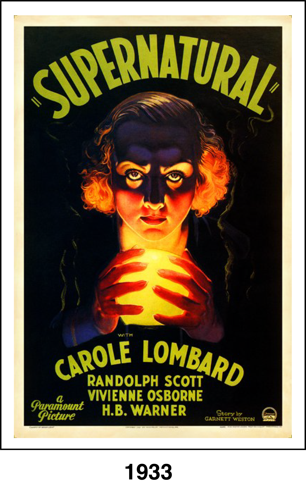
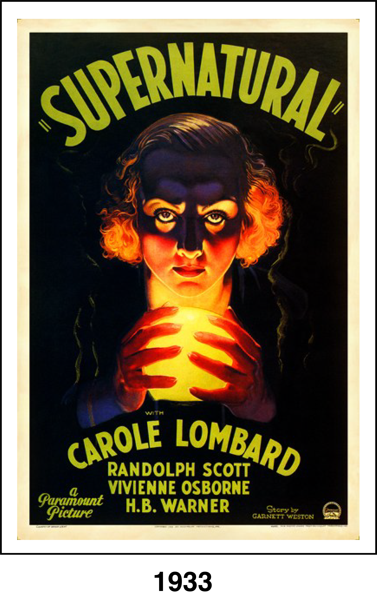

After her brother's death, Roma Courtney (Carole Lombard) becomes the heiress to his fortune. When fake psychic Paul Bavian (Alan Dinehart) claims to have a message from Roma's dead brother, he coaxes Roma into participating in a séance. Although Roma's fiancé, Grant (Randolph Scott), first believes the séance is nothing more than a scam, he eventually realizes that the vengeful spirit of an executed murderer (Vivienne Osborne) has possessed Roma's body.